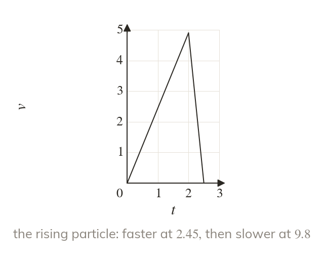
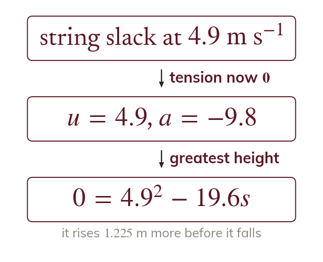
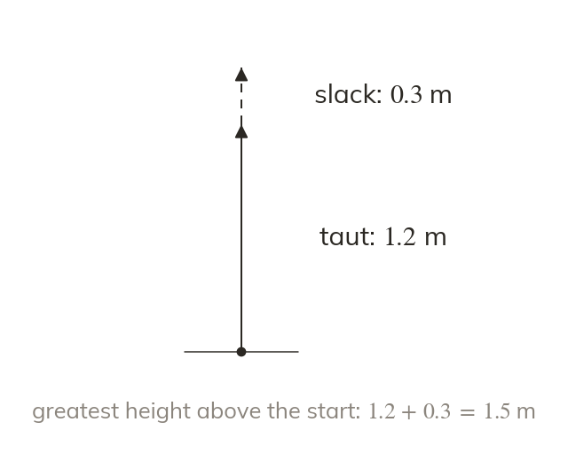
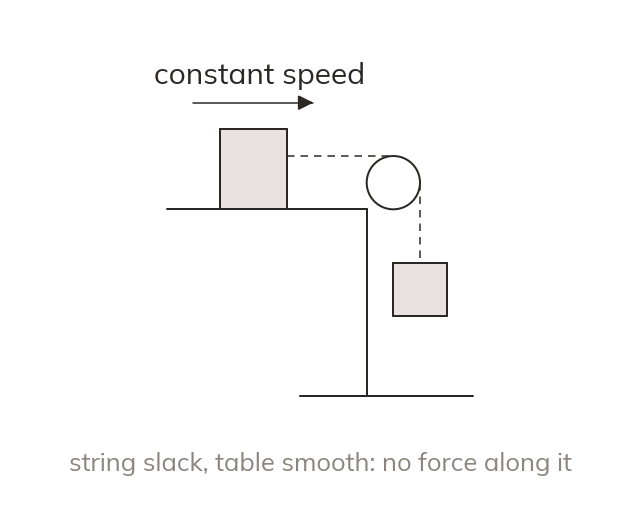
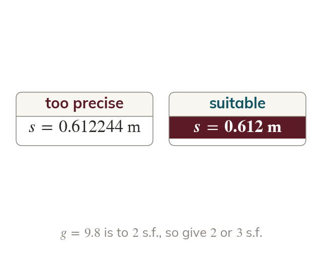

A slack string has no tension
When the falling particle hits the ground, the string goes slack and its tension becomes zero. The other particle then moves on under gravity alone.
A pulley problem does not end when one particle hits the ground: the string goes slack and the other particle moves on by itself. Splitting the motion into stages, each starting from the last one's speed, is how the exam's longest mechanics questions are solved.
Work down the page at your own pace. Write every answer in your book first, then click to check it.
Read each card, then follow the worked examples one step at a time.

When the falling particle hits the ground, the string goes slack and its tension becomes zero. The other particle then moves on under gravity alone.

The speed when the string goes slack is the initial speed for the next stage. The rising particle keeps rising, slowing at g, until it stops.
Pick an answer. If it's wrong, the feedback tells you which mistake it was.
Read each card, then follow the worked examples one step at a time.

The greatest height above the start is the distance risen while the string is taut plus the distance risen after it goes slack. Each stage has its own acceleration.

When the hanging particle lands, a block on a smooth table has no horizontal force on it. It moves on at its speed at that moment until it reaches the pulley.

Every answer carries its unit. An answer found with is given to or significant figures.
Pick an answer. If it's wrong, the feedback tells you which mistake it was.
Finished? Next lesson: M11.1 Functions of Time.
For each skill, tap the one that is true for you today. Your Revise pages start with anything you mark Not yet.
Your ratings are saved on this device only.
Log in, then search for a code to practise that skill.